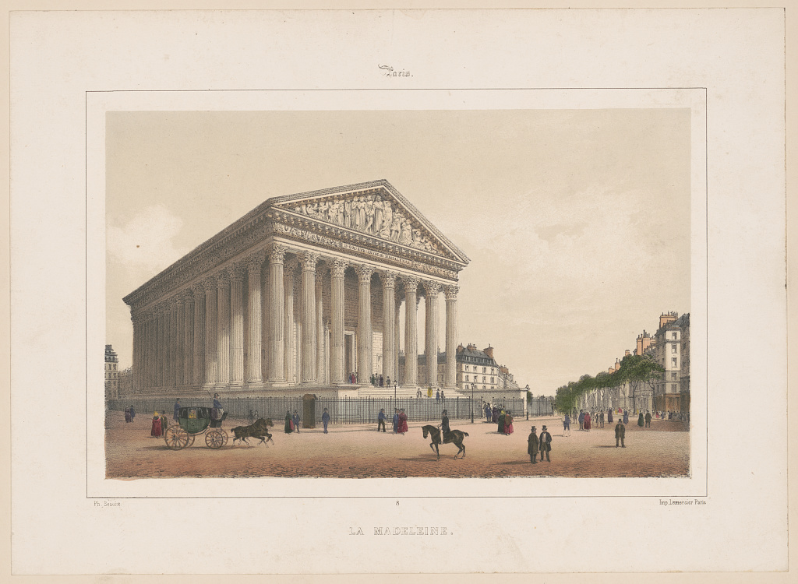
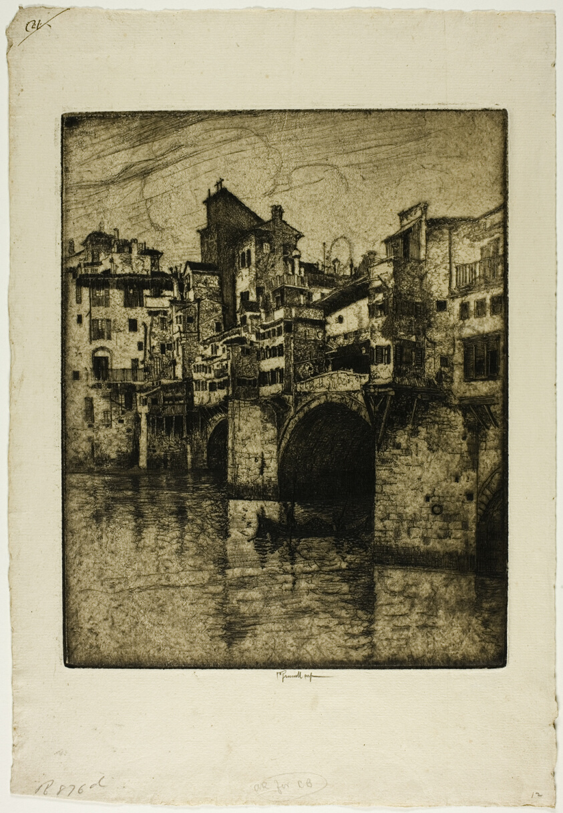
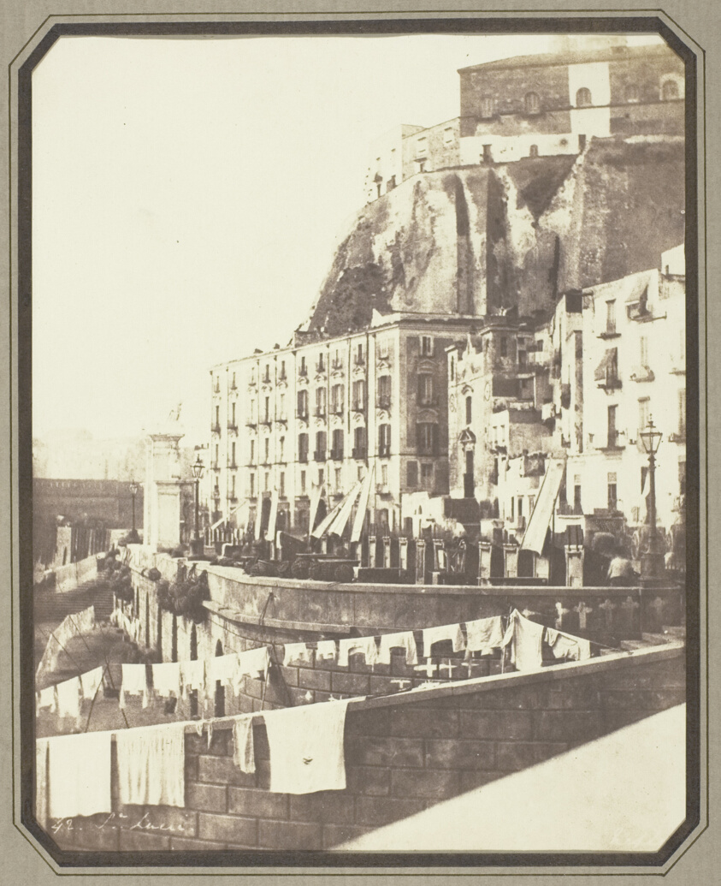

Город намечен
Название включено в географический указатель, но конкретные изображения ещё не подтверждены. Мы не создаём имитацию коллекции.
От Парижа и Неаполя до портов Азии и городов Америки. Старые изображения позволяют увидеть города глазами художников, путешественников и фотографов.
Мы показываем не только найденные листы, но и степень их проверки. Поисковая заготовка не считается музейной экспозицией. Архивные записи связаны с оригиналами, а законченные истории выделены отдельно.
Исследовать города


У этих трёх городов есть архивные свидетельства с датировками, источниками и объяснением различий между изображениями.
Мадлен, Пале-Рояль, Филипп Бенуа и городские виды разных эпох.
Открыть источники ↗ Италия · 1859–1900Понте-Веккьо и Дуомо в старых фотографиях и офортах.
Открыть источники ↗ Италия · 1846–1900Побережье Санта-Лючия, площадь Плебисцита и Королевский дворец.
Открыть источники ↗В реестре есть города, исторические виды и отдельные памятники. Количество находок не равно количеству проверенных музейных работ.
Загрузка…
Список собирается по именам географических объектов. Встроенный алгоритм пока не считает одинаковые названия в разных странах разными объектами; такие совпадения требуют ручного разрешения.
Исторический музей строится из первоисточников. Поэтому этапы поиска и проверки показываются открыто.
Название включено в географический указатель, но конкретные изображения ещё не подтверждены. Мы не создаём имитацию коллекции.
Найдены архивные указатели или кандидаты. Их атрибуция, соответствие городу и права могут нуждаться в редакционной проверке.
Есть проверяемые изображения, датировки и объяснения. Гипотезы о местах съёмки отделены от подтверждённых фактов.